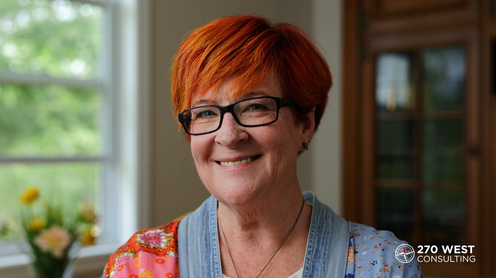
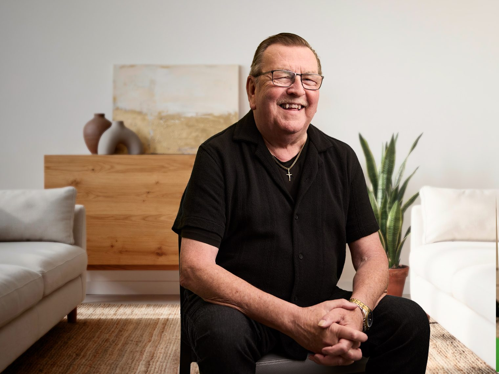
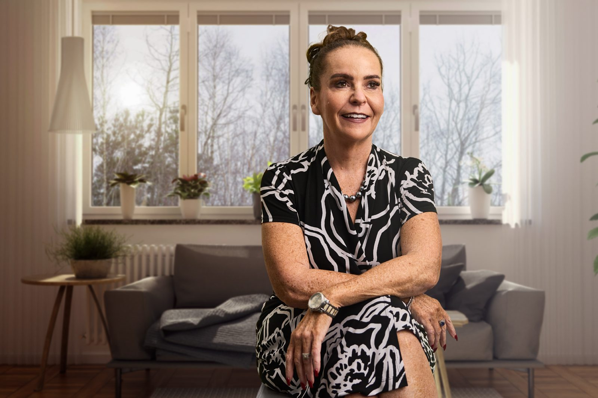

Medical documentation can be one of the biggest roadblocks in a VAC disability claim. We can help coordinate your health assessments.
We coordinate medical appointments with experienced health-care professionals and help you understand where each piece of medical information fits in your claim.

They set me up with a nurse practitioner to get all the assessments that I required… all without a family physician.
A strong VAC claim documents your current condition with a current diagnosis and medical records. Our experience allows us to identify where more medical information could be useful, and to help arrange it.
Not having a family physician does not have to hold up your claim. We arrange appointments with health-care practitioners experienced with VAC assessments and documentation, and coordinate any further visit that is needed.
A Benefit Navigator can talk through your situation and what a claim may need. VAC requires a diagnosed condition before it can decide entitlement to disability benefits, and the diagnosis comes from a health-care professional. We can help you arrange that assessment.
No. Most claims can move forward without you personally obtaining your full service health records. VAC can request service health records from the Department of National Defence or Library and Archives Canada. If additional records are needed, we can help you understand what to request and where to request it.
From your first conversation through your claim and decision, we help make a detailed process more manageable. Our experience helps us know what questions to ask and how to bring the pieces together, while you stay informed and in control.
Read how veterans describe their experience working with us.
I didn’t have to coordinate. I got an appointment. I showed up.

If I didn’t think the process was great, I certainly wouldn’t be recommending it to my own brother.

I felt looked after.
Conversations with our team are always free and never commit you to using our services. If you choose to work with us, our fee is 10% + HST on a successful claim. That fee reflects the full support we provide, from research and preparation to helping you file, coordinating appointments, organizing documentation, tracking what is outstanding, explaining VAC updates and decisions, and helping you understand the benefits and supports available to you.
You only pay if your claim is successful, and we explain the fee and terms clearly before you decide to proceed.
Talk with our team about your situation in a free 30-minute conversation. We will explain where 270 West may be able to help with your medical documentation.
Choose a time that suits you. A 270 West team member will confirm it with you, or suggest another time if needed.
Sample scheduler shown for layout. The live calendar replaces it once the scheduling link is connected.